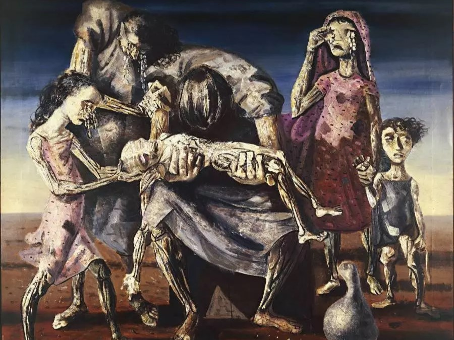

A obra "Criança Morta", de Cândido Portinari, foi pintada em 1944 e é uma das mais tocantes do artista. Essa pintura transmite uma visão intensa e angustiante da morte de uma criança, refletindo as condições sociais e a tragédia de vidas marcadas pela pobreza e pela violência. A cena retrata uma criança morta, com seu corpo estendido, rodeada por figuras humanas que demonstram sofrimento e luto. Portinari, conhecido por seu trabalho com temas sociais e sua crítica às condições de vida dos mais desfavorecidos, utiliza essa obra para refletir sobre o impacto da miséria, da guerra e das desigualdades sociais. A pintura tem um tom sombrio e dramático, com uma paleta de cores mais escuras, o que acentua o caráter trágico da cena. Através dessa obra, Portinari também se aprofunda no campo da emoção humana, buscando transmitir o sofrimento coletivo. A "Criança Morta" faz parte de sua produção mais voltada para a denúncia social e é considerada uma das peças chave do seu estilo expressionista, no qual ele usa formas e cores intensas para provocar uma reação visceral do espectador.
O Museu de Arte de São Paulo (MASP) é um dos mais importantes e renomados museus de arte da América Latina. Localizado na Avenida Paulista, no coração de São Paulo, é conhecido por sua arquitetura icônica, projetada por Lina Bo Bardi, com destaque para o imponente vão livre de 74 metros. O MASP abriga uma coleção diversificada e de relevância internacional, com obras que vão de mestres europeus, como Van Gogh, Monet e Rembrandt, a importantes artistas brasileiros e africanos, celebrando a pluralidade cultural. Além das exposições permanentes e temporárias, o museu oferece uma programação rica em eventos culturais, palestras e atividades educativas. O espaço é um ponto de encontro para amantes da arte e visitantes que desejam explorar a história e a cultura de forma dinâmica e acessível.
Faça um comentario.
Comentar como:
Esse site é protegido por reCAPTCHA e pelo google politicas de privacidade e termos de serviços.